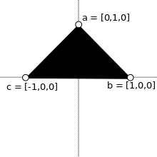

Introdução
Criação de uma janela básica com canvas.
Aplicações em Computação Gráfica utilizando Web-GL.
Utilizaremos HTML5 + Canvas para desenvolvermos páginas com contéudo de gráfico para aplicarmos a teoria vista em sala de aula. Primeiramente vamos definir o espaço de trabalho, um arquivo que contenha uma tanto elementos HTML como Javascript.
No código abaixo está uma página básica em HTML com canvas. Na linha 14, temos a tag que chama que descreve um espaço que irá exibir o conteúdo do canvas, após a página ser renderizada (onload), linha 13, chamamos uma função no javascript chamada draw();. Nesta função criamos a variável que irá associar-se com a tag html canvas cujo id é "cg-app", na linha 4, na linha 5 temos um comando condicional que verifica se o computador do usuário suporta o canvas, em caso negativo exibimos um pop-up dizendo que o canvas não é suportado (linha 9), caso contrário exibimos um pop-up dizendo que o canvas é suportado, linha 6, e é neste bloco condicional que fazemos todos os códigos responsáveis pelo desenho no espaço delimitado pela largura 300px e altura 200px (linha 14).
<html>
<script>
function draw() {
var canvas = document.getElementById('cg-app');
if (canvas.getContext) {
alert("Canvas suportado!");
//código de desenho vai aqui
}else{
alert("Canvas não suportado!");
}
}
</script>
<body onload="draw();">
<canvas id="cg-app" width="300" height="200"></canvas>
</body>
</html>No código abaixo descreve-se uma função que desenha as bordas do canvas cujo id é "cg-app". Neste código descrevemos apenas o código descrito na tag script do código acima. Considerando que o canvas é suportado, inicialmente descrevemos duas variáveis globais que armazenam a altura (Height) e a largura (Width) do canvas, nas linhas 6 e 7 setamos os valores corretos. Logo após, chamamos a função que desenha a borda, linha 8, passando o contexto de desenho bidimensional ("2d"). Na função drawBorder, linha 14, traçamos as linhas que definem a forma do canvas. Observe que o canvas possui uma forma particular de sistema de coordenadas, o centro do sistema é o canto superior esquerdo, o eixo x cresce para direita, como acontece no sistema usual de coordenadas 2d, e o eixo y cresce para baixo, ao contrário do que acontece no sistema usual. A figura logo abaixo ilustra isso.

Height = 0;
Width = 0;
function draw() {
var canvas = document.getElementById('cg-app');
if (canvas.getContext) {
Height = canvas.height;
Width = canvas.width;
drawBorder(canvas.getContext('2d'));
}else{
alert("Canvas suportado!");
}
}
function drawBorder(border){
border.beginPath();
border.moveTo(0,0);
border.lineTo(Width,0);
border.lineTo(Width,Height);
border.lineTo(0,Height);
border.lineTo(0,0);
border.stroke();
}Saída do código acima:
Para mais informações consulte este link que contém um tutorial que descreve os primeiros passos para se desenhar no canvas.
Em sala de aula desenvolvemos as principais matrizes de transformação geométricas para 2D. São elas: translação, rotação e escala. As funções que realizam essas transformações resultam as matrizes de translação 3x3, linha 16, tendo como entrada o deslocamento no eixo x e y; a matriz de escala 3x3, linha 24, tendo como entrada a escala no eixo x e y; e a matriz de rotação 3x3, linha 32, tendo como entrada o ângulo de rotação, em graus, que internamente será convertido em radianos (linha 33). Todas as matrizes estabelecem uma matriz de transformação homogenêa.
Além dessas matrizes de tranformação no código, temos as funções que realizam a multiplicação entre: duas matrizes 3x3, linha 84; uma matriz 3x3 e um vetor 3x1, linha 100. A função transform(), na linha 41, é responsável por converter um ponto, ou vetor, dado em um sistema de coordenadas usual para o sistema de coordenadas do canvas. Consideramos o sistema de coordenadas usual com o centro (0,0) no meio do canvas, ou seja, no ponto (width/2,height/2).
Para ilustrar as transformações aplicadas ao ponto utilizamos um cubo, como primitiva. O cubo tem seu centro na origem e lado igual a 1 (na figura abaixo). Os pontos que definem este cubo estão compreendidas entre as linhas 62 e 65. De acordo com a matriz de transformação, M, esses pontos iniciais recebem outros valores e são desenhados no canvas. Diferentemente do desenho da borda, utilizamos fill() para que a figura seja preenchida, ao invés de vazada.
Realizou-se neste código a seguinte composição de transformações: uma escala de 20 no eixo x e 20 no eixo y, uma rotação de 45 graus e uma translação de 10 no eixo x e 40 no eixo y (linha 11). Observe que a ordem de composição entre as matrizes é importante, e faz diferença no desenho final. A função responsável por desenha o cubo com a matriz de transformação M esta na linha 61.
Width = 0;
Height = 0;
function draw() {
var canvas = document.getElementById('canv');
if (canvas.getContext) {
Width = canvas.width;
Height = canvas.height;
context = canvas.getContext('2d');
drawBorder(context);
drawAxis(context);
M = mult(transform(), mult(translate(tx, ty), mult(rotate(angle),scale(sx, sy))));
drawCube(M, context);
}
}
function translate(x, y) { // dado dois pontos, x e y constroi a matriz homogenea de translação
return [
[1, 0, x],
[0, 1, y],
[0, 0, 1]
]; //retorna matriz 3x3
}
function scale(x, y) { // dado dois pontos, x e y constroi a matriz homogenea de translação
return [
[x, 0, 0],
[0, y, 0],
[0, 0, 1]
]; //retorna matriz 3x3
}
function rotate(theta) { // rotaciona theta em graus
theta = Math.PI * theta / 180.; //transforma theta em ratianos
return [
[Math.cos(theta), -Math.sin(theta), 0],
[Math.sin(theta), Math.cos(theta), 0],
[0, 0, 1]
]; //retorna matriz 3x3
}
function transform() { //matriz de transformação de coordenadas usual para coordenadas do canvas
return [
[1, 0, Width / 2],
[0, -1, Height / 2],
[0, 0, 1]
];
}
function drawAxis(canv) {
canv.beginPath();
canv.setLineDash([1.5, 1.5]);
canv.moveTo(0, Height / 2);
canv.lineTo(Width, Height / 2);
canv.stroke();
canv.beginPath();
canv.moveTo(Width / 2, 0);
canv.lineTo(Width / 2, Height);
canv.stroke();
}
function drawCube(M, canv) { //desenha um cubo passando a matriz de transformação e o canvas para desenho
a = multVec(M, [0.5, 0.5, 1]);
b = multVec(M, [0.5, -0.5, 1]);
c = multVec(M, [-0.5, -0.5, 1]);
d = multVec(M, [-0.5, 0.5, 1]);
canv.beginPath();
canv.moveTo(a[0], a[1]);
canv.lineTo(b[0], b[1]);
canv.lineTo(c[0], c[1]);
canv.lineTo(d[0], d[1]);
canv.fill();
}
function drawBorder(border){
border.beginPath();
border.moveTo(0,0);
border.lineTo(Width,0);
border.lineTo(Width,Height);
border.lineTo(0,Height);
border.lineTo(0,0);
border.stroke();
}
function mult(A, B) { //multiplicação de duas matrizes 3x3
var C = [
[1, 0, 0],
[0, 1, 0],
[0, 0, 1]
];
var i;
var j;
for (i = 0; i < 3; i++) {
for (j = 0; j < 3; j++) {
C[i][j] = A[i][0] * B[0][j] + A[i][1] * B[1][j] + A[i][2] * B[2][j];
}
}
return C; //retorna uma matriz 3x3
}
function multVec(A, b) { //multiplicação de uma matriz (3x3) e um vetor
var C = [0, 0, 0];
var i;
var j;
for (i = 0; i < 3; i++) {
C[i] = A[i][0] * b[0] + A[i][1] * b[1] + A[i][2] * b[2];
}
return C; //retorna um vetor 3x1
}Saída do código acima:
Abaixo pode-se aplicar as matrizes em tempo real (atividade requisitada em sala).